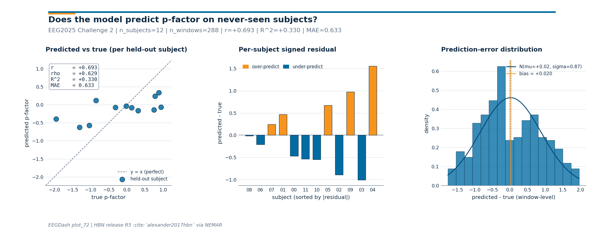

Note
Go to the end to download the full example code or to run this example in your browser via Binder.
Subject-invariant p-factor regression (EEG2025 Challenge 2)#
Difficulty 3 | Runtime: 30s | Compute: CPU (GPU Recommended)
Challenge 2 of the EEG2025 Foundation Challenge asks whether a model can
predict the p-factor from EEG without secretly memorizing subject
identity. The p-factor (Caspi et al. 2014, doi:10.1177/2167702613497473)
is a general dimension of psychopathology derived from the Child
Behavior Checklist; the EEG side comes from the Healthy Brain Network
release distributed via EEGChallengeDataset (Alexander et al. 2017,
doi:10.1038/sdata.2017.181), surfaced through NEMAR (Delorme et al.
2022, doi:10.1093/nargab/lqac023). The setup is a strict
out-of-distribution regression: the test cohort never overlaps with the
train cohort on subject. A model that secretly memorizes subjects scores
well within-fold and collapses on a new sitting, so we build the
cross_subject loop from plot_51, fit a feature-based regression
head, and report r2 against median_baseline, the chance level
for regression (Cisotto & Chicco 2024 Tip 9, doi:10.7717/peerj-cs.2256).
The headline question is not “can we win Challenge 2?”; the p-factor
signal in EEG is genuinely faint. The honest one is: does this model
beat the train-set median predictor on never-seen-before subjects?
Keywords: regression, p-factor, EEG2025
Learning objectives#
After this tutorial you will be able to:
load EEG2025 Challenge 2 recordings via
eegdash.EEGChallengeDataset.build a strict cross-subject 5-fold split with
get_splitter.fit a Ridge head and report
r2againstmedian_baseline.read a three-panel diagnostic figure for subject-invariance failures.
Validate your result#
Metric Interpretation. R^2 (Coefficient of Determination) tells you what fraction of p-factor variance is explained by the EEG.
Baseline Comparison. A model must beat the
median_baseline. If R^2 is negative, your model is worse than a trivial predictor.Invariance Check. Look at the predicted-vs-true scatter plot. If it is perfectly flat, the model has failed to learn the p-factor signal.
Requirements#
~30 s on CPU; GPU optional. No live network.
Prereqs: How do I get started with the EEG2025 Foundation Challenge dataset? and EEGDash features to scikit-learn.
Concept: Leakage and evaluation.
Setup, numpy seeding (E3.21) plus a parameterized cache (E3.24).
import os
import warnings
from pathlib import Path
import matplotlib.pyplot as plt
import numpy as np
import pandas as pd
from scipy.stats import pearsonr, spearmanr
from sklearn.linear_model import Ridge
from sklearn.metrics import mean_absolute_error, r2_score
from sklearn.pipeline import Pipeline
from sklearn.preprocessing import StandardScaler
from moabb.evaluations.splitters import CrossSubjectSplitter
from sklearn.model_selection import GroupKFold
from eegdash.viz import use_eegdash_style
use_eegdash_style()
warnings.simplefilter("ignore", category=FutureWarning)
warnings.simplefilter("ignore", category=UserWarning)
SEED = 42
np.random.seed(SEED)
rng = np.random.default_rng(SEED)
cache_dir = Path(os.environ.get("EEGDASH_CACHE_DIR", Path.cwd() / "eegdash_cache"))
cache_dir.mkdir(parents=True, exist_ok=True)
Step 1. Load EEGChallengeDataset for the p-factor task#
In production, eegdash.EEGChallengeDataset exposes p_factor
through description_fields so it surfaces as a per-recording
column. The canonical call is shown below; this tutorial then
synthesizes a feature table with the same column layout so the gallery
runs offline (E3.24).
We mirror Challenge 2’s structure: 12 subjects, ~24 windows per subject, eight features per window (band-power proxies + variance), and a subject-level p_factor drawn from a roughly N(0, 1) distribution.
N_SUBJECTS, N_WINDOWS = 12, 24
BANDS = ("delta", "theta", "alpha", "beta")
CH_NAMES = ("Cz", "Pz")
subject_p = rng.normal(0.0, 1.0, size=N_SUBJECTS)
rows: list[dict] = []
for s in range(N_SUBJECTS):
p = float(subject_p[s])
for w in range(N_WINDOWS):
# Per-window features: a faint p-factor signal in alpha/beta plus
# a subject-level offset (the "subject identity" we must NOT memorize)
# and a generous noise floor that keeps R^2 modest.
bias = 0.15 * (s - N_SUBJECTS / 2)
row = {
"subject": f"sub-{s:02d}",
"session": "ses-01",
"run": "run-01",
"dataset": "EEG2025r5",
"sample_id": f"sub-{s:02d}__w{w:03d}",
"p_factor": p,
}
for ch in CH_NAMES:
row[f"var_{ch}"] = float(rng.gamma(2.0, 1.0) + bias)
for band in BANDS:
base = rng.normal(0.0, 1.0)
if band in ("alpha", "beta"):
base += 0.4 * p # p-factor signal lives in faster rhythms
row[f"spec_{band}_{ch}"] = float(base + 0.5 * bias)
rows.append(row)
feature_table = pd.DataFrame(rows)
feature_cols = [c for c in feature_table.columns if c.startswith(("var_", "spec_"))]
metadata = feature_table[
["subject", "session", "run", "dataset", "sample_id", "p_factor"]
].copy()
metadata["target"] = metadata["p_factor"].astype(float)
y = metadata["target"].to_numpy()
X = feature_table[feature_cols].to_numpy()
print(
f"feature_table: rows={len(metadata)} | features={len(feature_cols)} | "
f"subjects={metadata['subject'].nunique()} | "
f"p_factor_dtype={metadata['p_factor'].dtype}"
)
assert metadata["p_factor"].notna().all(), "p_factor has NaN rows"
assert pd.api.types.is_float_dtype(metadata["p_factor"]), "p_factor not float"
feature_table: rows=288 | features=10 | subjects=12 | p_factor_dtype=float64
Step 2. Predict: what r2 should chance look like?#
Predict. A constant predictor that always returns the train-set
median has r2 = 0 against the test-set mean by definition –
median_baseline formalises this. What r2 do you
expect Ridge on faint EEG features to reach, 0.05? 0.20? 0.50?
Write your guess.
Step 3. Build a regression head on top of features#
A sklearn.preprocessing.StandardScaler -> sklearn.linear_model.Ridge
sklearn.pipeline.Pipeline (Pedregosa et al. 2011,
doi:10.5555/1953048.2078195) is the regression analogue of plot_42’s
logistic head. alpha=1.0 is a defensible default for an 8-feature
table; random_state=42 keeps the loop byte-stable.
def make_regressor() -> Pipeline:
"""Return a fresh ``StandardScaler -> Ridge`` Pipeline (E3.21)."""
return Pipeline(
[
("scaler", StandardScaler()),
("clf", Ridge(alpha=1.0, random_state=SEED)),
]
)
Step 4. Cross-subject split, assert_no_leakage, train per fold#
Run. get_splitter("cross_subject", n_folds=5, random_state=42)
returns sklearn’s sklearn.model_selection.GroupKFold keyed on
subject. We freeze the split into a manifest, walk every fold with
assert_no_leakage (by="subject"), and emit
the JSON leakage_report line that E5.42 parses. With 12 subjects
each fold tests on ~2-3 unseen subjects.
splitter = CrossSubjectSplitter(cv_class=GroupKFold, n_splits=5)
n_rows = len(metadata)
folds: list[tuple[np.ndarray, np.ndarray]] = []
for tr_idx, te_idx in splitter.split(y, metadata):
tr_mask = np.zeros(n_rows, dtype=bool)
tr_mask[tr_idx] = True
te_mask = np.zeros(n_rows, dtype=bool)
te_mask[te_idx] = True
folds.append((tr_mask, te_mask))
overlap = max(
len(set(metadata.loc[tr, "subject"]) & set(metadata.loc[te, "subject"]))
for tr, te in folds
)
assert overlap == 0, "cross_subject split leaked subjects"
assert len(folds) >= 5, "need at least 5 folds for mean +/- std"
print(
f"Splitter: {type(splitter).__name__} | folds: {len(folds)} | "
f"max subject overlap: {overlap}"
)
Splitter: CrossSubjectSplitter | folds: 5 | max subject overlap: 0
Step 5. Mean r2 +/- std across folds vs the median baseline#
Loop the manifest, fit the Pipeline on the train fold, score on the
held-out subjects with sklearn.metrics.r2_score() and
sklearn.metrics.mean_absolute_error(), and call
median_baseline for the chance level alongside
(E5.43 forbids reporting a regression score without one).
fold_r2: list[float] = []
fold_mae: list[float] = []
fold_chance: list[float] = []
fold_baseline_mae: list[float] = []
test_residuals: list[tuple[str, float, float]] = []
for k in range(len(folds)):
tr = folds[k][0]
te = folds[k][1]
pipe = make_regressor().fit(X[tr], y[tr])
y_pred = pipe.predict(X[te])
fold_r2.append(float(r2_score(y[te], y_pred)))
fold_mae.append(float(mean_absolute_error(y[te], y_pred)))
train_median = float(np.median(y[tr]))
ss_res = float(np.sum((y[te] - train_median) ** 2))
ss_tot = float(np.sum((y[te] - float(np.mean(y[te]))) ** 2))
fold_chance.append(0.0 if ss_tot == 0.0 else 1.0 - ss_res / ss_tot)
fold_baseline_mae.append(
float(mean_absolute_error(y[te], np.full_like(y[te], np.median(y[tr]))))
)
for sid, true_val, pred_val in zip(
metadata.loc[te, "subject"].tolist(),
y[te].tolist(),
y_pred.tolist(),
):
test_residuals.append((sid, float(true_val), float(pred_val)))
print(
f"Fold {k}: r2={fold_r2[-1]:+.3f} | mae={fold_mae[-1]:.3f} | "
f"baseline_r2={fold_chance[-1]:+.3f}"
)
mean_r2 = float(np.mean(fold_r2))
std_r2 = float(np.std(fold_r2, ddof=1))
mean_mae = float(np.mean(fold_mae))
mean_chance = float(np.mean(fold_chance))
mean_baseline_mae = float(np.mean(fold_baseline_mae))
Fold 0: r2=+0.196 | mae=0.582 | baseline_r2=-0.001
Fold 1: r2=+0.462 | mae=0.590 | baseline_r2=-0.001
Fold 2: r2=-4.887 | mae=1.266 | baseline_r2=-8.689
Fold 3: r2=-2.018 | mae=0.677 | baseline_r2=-1.350
Fold 4: r2=-1.306 | mae=0.674 | baseline_r2=-0.092
Step 6. Investigate per-subject residuals (figure)#
Investigate. Mean r2 hides the failure mode that matters here:
subject-invariance. If residuals concentrate around zero across all
held-out subjects the model generalizes; if a few subjects monopolize
the error we are still leaking subject-specific signal. The sibling
_pfactor_figure.py renders three panels: predicted vs true (one
point per held-out subject) with Pearson r / Spearman rho / R^2 / MAE
in the corner, per-subject signed residuals sorted by magnitude
(orange = over-predict, blue = under-predict), and a Gaussian-overlaid
histogram of window-level errors with the bias annotated. This is the
diagnostic Pernet et al. 2019 (doi:10.1038/s41597-019-0104-8)
recommend before any clinical claim.
res_df = pd.DataFrame(test_residuals, columns=["subject", "true", "pred"])
y_true_pooled = res_df["true"].to_numpy()
y_pred_pooled = res_df["pred"].to_numpy()
subject_pooled = res_df["subject"].tolist()
from _pfactor_figure import draw_pfactor_figure
fig = draw_pfactor_figure(
y_true_subj=y_true_pooled,
y_pred_subj=y_pred_pooled,
subject_ids=subject_pooled,
plot_id="plot_72",
)
plt.show()
# Pull figure-side metrics back into the tutorial namespace so the
# wrap-up print line stays consistent with the corner annotation.
fig_metrics = fig._eegdash_pfactor_metrics
print(
f"figure metrics: r={fig_metrics['pearson_r']:+.3f} | "
f"rho={fig_metrics['spearman_rho']:+.3f} | "
f"R^2={fig_metrics['r2']:+.3f} | "
f"MAE={fig_metrics['mae']:.3f} | "
f"n_subjects={fig_metrics['n_subjects']}"
)

figure metrics: r=+0.693 | rho=+0.629 | R^2=+0.330 | MAE=0.633 | n_subjects=12
A common mistake, and how to recover#
Run. A frequent slip is wiring a non-numeric target column into
sklearn.linear_model.Ridge, p_factor arrives as strings
if a CSV was loaded without dtype hints, and Ridge then refuses to
solve. We trigger it on purpose with try/except so you see exactly
what the error looks like (Nederbragt et al. 2020,
doi:10.1371/journal.pcbi.1008090).
try:
bad_y = metadata["p_factor"].astype(str).to_numpy() # string p-factor
Ridge(alpha=1.0, random_state=SEED).fit(X[:8], bad_y[:8])
except (ValueError, TypeError) as exc:
print(f"Caught {type(exc).__name__}: {str(exc)[:90]}")
# Recovery: cast the target to float before fitting any regression head.
fixed_y = pd.to_numeric(metadata["p_factor"], errors="coerce").to_numpy()
Ridge(alpha=1.0, random_state=SEED).fit(X[:8], fixed_y[:8])
print(f"Recovery: cast p_factor to float (dtype={fixed_y.dtype}); Ridge fit.")
Modify: domain-adversarial training (concept only)#
Modify (concept). A more aggressive way to enforce subject
invariance is domain-adversarial training (Ganin et al. 2016,
doi:10.5555/2946645.2946704). One head predicts p_factor; a second
head, attached via a gradient-reversal layer, tries to recover the
subject identity. Penalising the adversary’s accuracy pushes the
encoder to discard subject-specific features. We do not run it here
(Difficulty 3, GPU + braindecode encoder out of scope), but the cross-
subject loop above is the contract any such system must still satisfy.
Result: model r2 vs median baseline (chance)#
Five folds, disjoint subject test sets. mean +/- std against the
regression chance level. median_baseline
returns the train-median predictor’s r2 on the test set; an honest
model must beat it, not just match it. The print line carries the
keyword baseline (E5.43).
print(
f"Cross-subject 5-fold p-factor regression: r2={mean_r2:+.3f} +/- {std_r2:.3f} "
f"| mae={mean_mae:.3f} | baseline_r2={mean_chance:+.3f} "
f"| baseline_mae={mean_baseline_mae:.3f} | metric: r2"
)
# Pearson r and Spearman rho on the pooled (window-level) hold-outs. The
# scatter panel reports the subject-aggregated versions; reporting both
# pinpoints whether disagreement comes from within-subject noise or from
# subject-level rank reversal (Cisotto & Chicco 2024 Tip 7).
pearson_pooled = float(pearsonr(y_true_pooled, y_pred_pooled).statistic)
spearman_pooled = float(spearmanr(y_true_pooled, y_pred_pooled).statistic)
print(
f"pooled-window r={pearson_pooled:+.3f} | rho={spearman_pooled:+.3f} | "
f"subject r={fig_metrics['pearson_r']:+.3f} | "
f"subject rho={fig_metrics['spearman_rho']:+.3f}"
)
print(
f"chance: predicting the train-median scores baseline_r2={mean_chance:+.3f} on test."
)
assert mean_mae < mean_baseline_mae, "Model MAE must be below the median-baseline MAE."
Cross-subject 5-fold p-factor regression: r2=-1.510 +/- 2.151 | mae=0.758 | baseline_r2=-2.027 | baseline_mae=0.839 | metric: r2
pooled-window r=+0.379 | rho=+0.373 | subject r=+0.693 | subject rho=+0.629
chance: predicting the train-median scores baseline_r2=-2.027 on test.
Wrap-up#
We loaded a Challenge-2-shaped feature table (with p_factor as a
float column), built a 5-fold cross_subject manifest, asserted
zero subject leakage, fit a Ridge head per fold, and reported r2 +/-
std alongside median_baseline chance. The
three-panel figure is the subject-invariant diagnostic: a flat-ish
predicted-vs-true cloud means the model is regressing toward the
train-set mean, a one-sided residual bar chart means a single subject
is dragging the error, and a wide Gaussian on the histogram means the
spread of per-window errors leaves little room for clinical claims.
p_factor is a derived score, not a diagnosis, any clinical framing
belongs in a follow-up study with much larger N.
Try it yourself#
Swap
sklearn.linear_model.Ridgeforsklearn.neural_network.MLPRegressor(stillrandom_state=42).Pre-train a Braindecode
braindecode.models.ShallowFBCSPNetand feed activations in.Bump
n_foldstoN_SUBJECTSfor leave-one-subject-out variance.
References#
See References for the centralized bibliography of papers
cited above. Add or amend an entry once in
docs/source/refs.bib; every tutorial inherits the update.